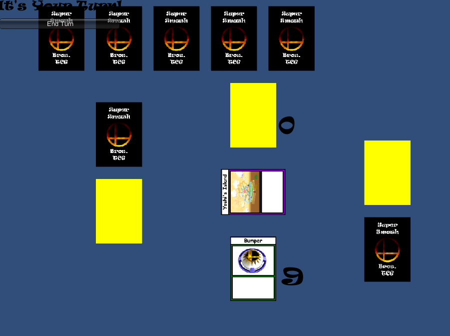

About Me:
I was born August 11th, 1999 in Seekonk, MA.
We moved around a bit, however when I lived in Arizona I got my first PC and began using the Unity3D game engine.
By 2015 I made a lot of test projects, many lost to time, however a concept for a card game prototype lives on!

After that I began using Java to create simple game engines
In 2016 I began using the Roblox Game Engine to produce games based on Pro-Wrestling shows like WWE, and AEW.
These games earned over 10,000,000 Unique users across the years they were active.
They began being played by popular streamers online.
And began allowing me to make money off of game development.
In Fall of 2018, I began my freshman year at Landmark College.
While COVID-19 did hamper my education with a slight downturn, I was able to redirect my GPA and maintain honors status.
I am currently slated to graduate December of 2022 with a Bachelors in Computer Science.